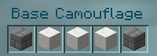
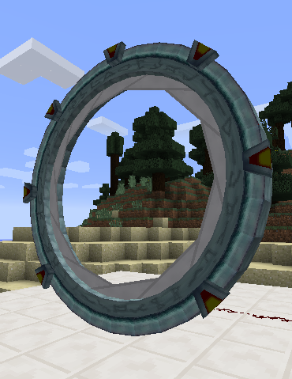
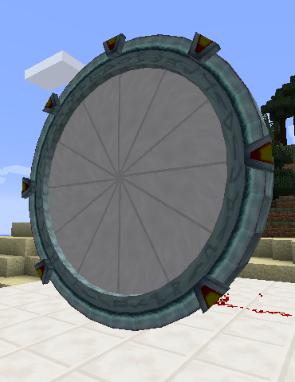
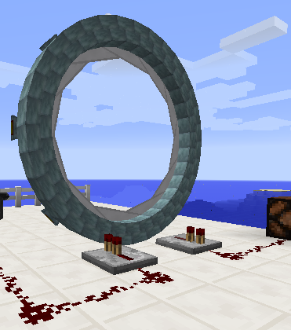

Example of a "buried" stargate achieved using the above arrangement of camouflage blocks.
 To create a stargate, you need to
build a 5x5 ring composed of a
Stargate Base Block, eight Stargate Ring Blocks and seven Stargate
Chevron Blocks, arranged in the patter shown here. The blue circle on
the base block should face the direction you want the front of the
stargate to be in; the direction of the other blocks doesn't matter.
To create a stargate, you need to
build a 5x5 ring composed of a
Stargate Base Block, eight Stargate Ring Blocks and seven Stargate
Chevron Blocks, arranged in the patter shown here. The blue circle on
the base block should face the direction you want the front of the
stargate to be in; the direction of the other blocks doesn't matter. |
 Example of a "buried" stargate achieved using the above arrangement of camouflage blocks. |
|  Open iris |
 Closed iris |
 If you are using redstone wires to control the iris or monitor the gate's state, you will need to insert repeaters as shown here, otherwise the signal emitted when the gate is connected will activate the iris. |
| Problem |
Possible
causes |
| Blocks will not merge into
stargate |
• Block pattern is incorrect • Base block facing in wrong direction • Interior of ring is not empty |
| Central button of controller
is
dark and controller is not responsive |
• Controller not close enough
to
stargate • Controller not facing towards stargate • Stargate already linked to another controller |
| Dialling an address fails |
• Address is incorrect • Initiating stargate has insufficient fuel • Destination stargate is already connected |
| Stargate begins dialling by
itself |
This is normal. When receiving
a
connection, the receiving stargate automatically dials back to the initiating stargate. |